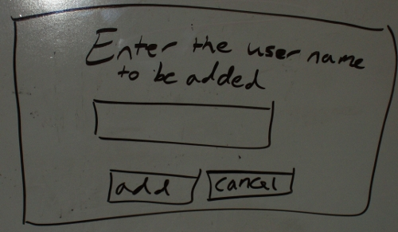

This scenario shows how the instructor of a class can add users to a classlist.
Adding Users is important because it allows the instructor to add students into a class for stat tracking.
In this scenario, we assume that the instructor has just logged into the appropriate class and is looking at the admin page.
Details of logging in as a admin can be found in
Section 2.1.
To add a user, the admin selects User Management and selects Add User from the drop down menu and the diaglog box show in Figure x is shown by the system.

Figure x: Add User Dialog.
The user field is a one line string where the student's user name is typed in. After the student's user name is entered, click Add to add the student to the classlist.